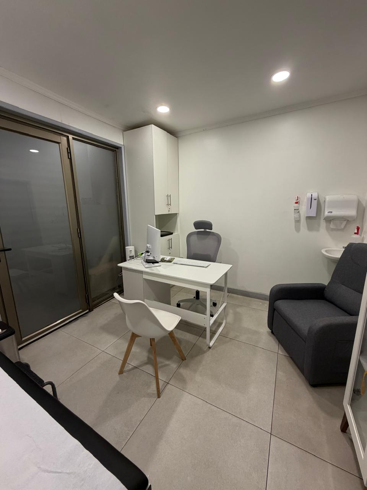
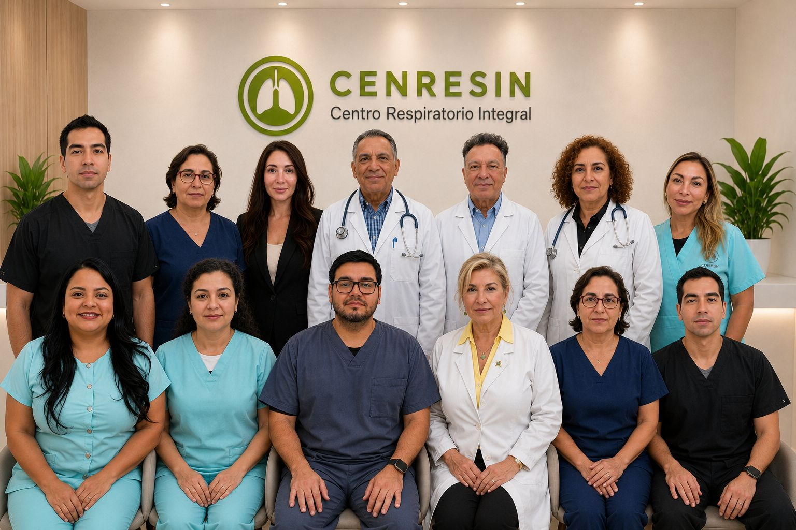

Conoce cómo participar
Revisa nuestras áreas de investigación, resuelve tus dudas y solicita que nuestro equipo te contacte.
Ver áreas de estudio ›Información clara para quienes desean conocer nuestros estudios y una presentación profesional del centro para patrocinadores y organizaciones de investigación.
Revisa nuestras áreas de investigación, resuelve tus dudas y solicita que nuestro equipo te contacte.
Ver áreas de estudio ›Experiencia respiratoria, infraestructura, equipo de investigación y contacto para factibilidad.
Información del centro ›Revisa las áreas de investigación actualmente disponibles y conoce información general sobre las condiciones que estudiamos.
Investigaciones dirigidas a personas con distintas formas y niveles de control del asma.
Solicitar información ›Estudios relacionados con la enfermedad pulmonar obstructiva crónica y su manejo.
Solicitar información ›Investigaciones orientadas a comprender y evaluar alternativas en bronquiectasias.
Solicitar información ›Estudios en rinosinusitis crónica y otras condiciones respiratorias.
Solicitar información ›
Participar en investigación clínica permite contribuir al conocimiento científico y, dependiendo del estudio, acceder a evaluaciones, procedimientos y seguimiento médico establecidos en el protocolo. Antes de participar recibirás toda la información necesaria para tomar una decisión libre e informada.
Los procedimientos, visitas y apoyos asociados dependen de las características de cada estudio.
Nuestro equipo de investigación está integrado por médicos investigadores, coordinadores de estudios clínicos y profesionales de la salud con experiencia en investigación respiratoria.
Trabajamos bajo protocolos previamente evaluados y autorizados por las autoridades y organismos correspondientes, resguardando los derechos, la seguridad y el bienestar de cada participante.
Conoce nuestro equipo de investigación ›
Nos esforzamos por brindarte una experiencia clara, acompañada e informada de principio a fin.
Analiza tus opciones y decide qué es lo más adecuado para ti.
Nuestro equipo se asegurará de que recibas información clara sobre los tratamientos, procedimientos, plazos y demás detalles del estudio. También revisará contigo las evaluaciones necesarias para determinar si el estudio podría ser adecuado para ti.
Puedes dejar de participar en cualquier momento y por cualquier motivo.
Las visitas, procedimientos y evaluaciones dependen de las características de cada estudio.
CENRESIN cuenta con experiencia en la ejecución de estudios clínicos y un equipo dedicado a investigación, con infraestructura y procesos orientados al cumplimiento de Buenas Prácticas Clínicas.
Conoce nuestra experiencia y capacidades ›Artículos para entender los estudios clínicos y las enfermedades que investigamos.
El VRS no solo afecta a los niños: en personas de 60 años o más y en quienes viven con enfermedades crónicas puede causar neumonía y hospitalización. Te explicamos síntomas, riesgos y cómo prevenirlo.
Leer noticiaLa EPOC suele confundirse con el "cansancio de la edad" o la "tos del fumador". La espirometría es el examen que confirma el diagnóstico y permite iniciar el tratamiento a tiempo.
Leer noticia¿Participar en un estudio clínico es ser "conejillo de Indias"? ¿Me puedo retirar cuando quiera? Respondemos las dudas más comunes sobre la investigación clínica y cómo se protege a los participantes.
Leer noticiaAntes de participar recibirás información específica y tendrás el tiempo necesario para hacer preguntas.
Información para participantes ›Es una investigación realizada con personas bajo un protocolo definido, con evaluación ética y supervisión profesional.
Cada estudio tiene requisitos específicos. El equipo revisará los antecedentes generales y explicará los pasos de evaluación.
Los procedimientos relacionados con el estudio se informan antes de participar. Las condiciones específicas dependen de cada investigación.
La participación es voluntaria. Puedes retirar tu consentimiento y conversar con el equipo sobre el proceso.
Los estudios son revisados por un Comité Ético Científico y cuentan con responsabilidades definidas para el investigador, el patrocinador y las autoridades correspondientes.
¿Conoces a alguien a quien le puede interesar participar?